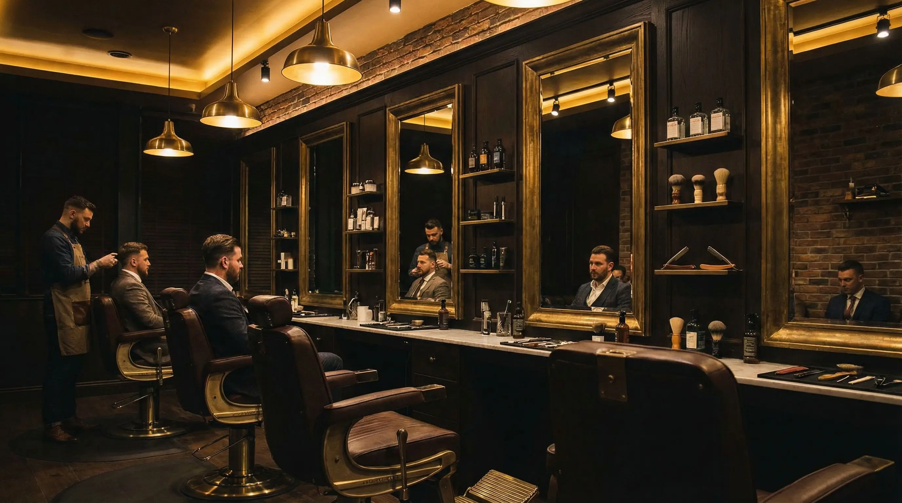
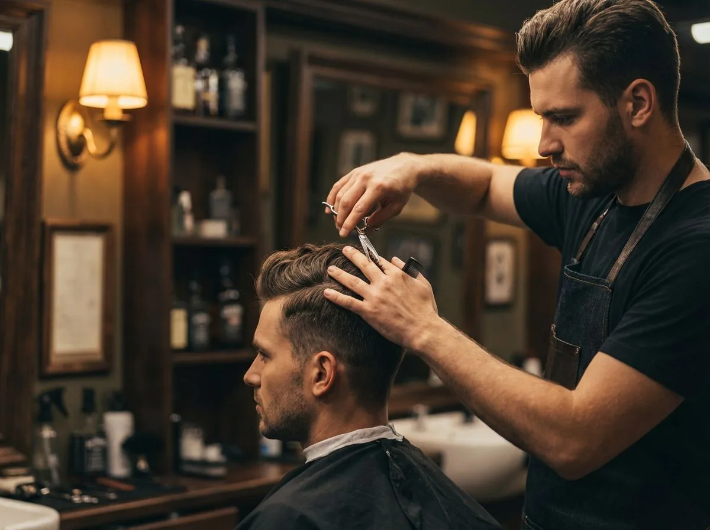
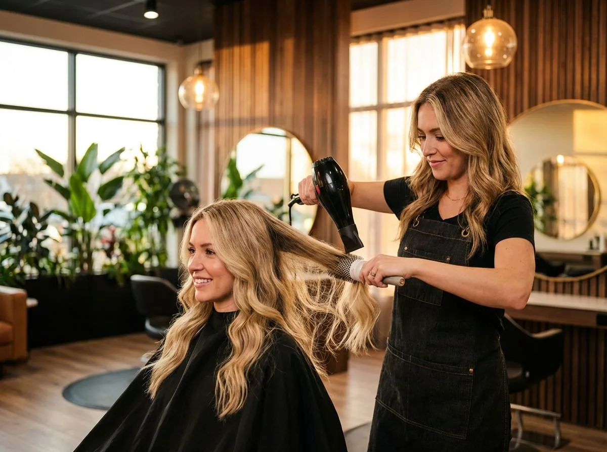
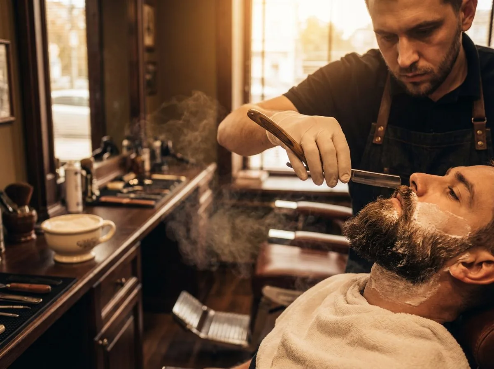
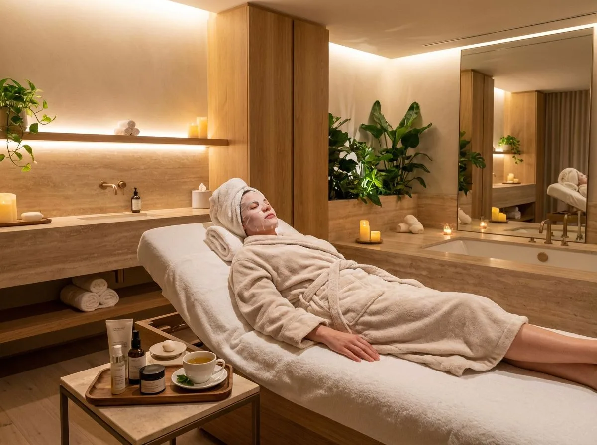

Wo Handwerk auf Stil trifft
S1 Haircut & Beauty Schaba — Ihr Salon für präzise Herrenschnitte, elegante Damenfrisuren und erstklassige Bartpflege im Herzen von München-Haidhausen.
Unsere Leistungen
Von klassischen Schnitten über kreative Colorationen bis hin zu erstklassiger Bartpflege — bei S1 Haircut sind Sie in besten Händen.

Herrenschnitt
Klassisch, modern oder trendig — unsere Barber schneiden Ihr Haar mit Präzision und Gespür für Ihren individuellen Stil.
Mehr erfahren
Damenschnitt & Styling
Schnitt, Coloration, Strähnchen oder Ombré — wir verwandeln Ihre Haarwünsche in Realität. Mit Beratung, die auf Sie zugeschnitten ist.
Mehr erfahren
Bartpflege & Rasur
Bekannt für erstklassige Bartarbeit: Modellierung, Hot-Towel-Rasur, Bart-Designs und Haartattoos — Handwerkskunst vom Feinsten.
Mehr erfahren
Beauty & Pflege
Gesichtsbehandlungen, Waxing, Sugaring, Augenbrauen- und Wimpernpflege — unser Beauty-Angebot für Ihr Wohlbefinden.
Mehr erfahrenMehr als nur ein Friseur
Handwerk mit Leidenschaft
Jeder Schnitt ist ein Unikat. Schaba und sein Team nehmen sich Zeit für Beratung und perfekte Umsetzung.
Lange Öffnungszeiten
Montag bis Freitag bis 20 Uhr, Samstag bis 18 Uhr — wir passen uns Ihrem Alltag an, nicht umgekehrt.
Familiäre Atmosphäre
Bei uns fühlen Sie sich wie zu Hause. Kaffee, Tee oder Wasser gibt es selbstverständlich aufs Haus.
Mitten in Haidhausen
Einsteinstraße 105 — perfekt erreichbar per S-Bahn (Leuchtenbergring) oder Tram. Ihr Salon um die Ecke.
Ihr Weg zum perfekten Look
Termin vereinbaren
Rufen Sie uns an, schreiben Sie eine E-Mail oder nutzen Sie unser Kontaktformular. Wir finden den passenden Termin für Sie.
Persönliche Beratung
Im Salon besprechen wir Ihre Wünsche. Welcher Schnitt passt zu Ihnen? Welche Pflege braucht Ihr Haar? Wir beraten ehrlich und kompetent.
Ihr neuer Look
Lehnen Sie sich zurück und genießen Sie die Behandlung. Mit einem Lächeln und dem perfekten Ergebnis verlassen Sie unseren Salon.
Bereit für Ihren neuen Look?
Vereinbaren Sie jetzt Ihren Termin bei S1 Haircut & Beauty in München-Haidhausen.
Jetzt Termin buchenAlles, was Sie wissen müssen
Wir empfehlen eine Terminvereinbarung per Telefon (089 / 470 31 53) oder über unser Kontaktformular, damit Sie keine Wartezeit haben. Walk-ins sind je nach Auslastung ebenfalls willkommen.
Wir akzeptieren Barzahlung sowie gängige Kartenzahlungen. Fragen Sie gerne direkt im Salon nach den aktuellen Zahlungsmöglichkeiten.
Ja, Kinderhaarschnitte gehören zu unserem festen Angebot. In unserer familienfreundlichen Atmosphäre fühlen sich auch die Kleinen wohl.
Schaba ist bekannt für erstklassige Bartarbeit. Wir arbeiten mit heißen Tüchern, scharfen Rasiermessern und viel Erfahrung. Von der klassischen Nassrasur bis zum kreativen Bart-Design — bei uns ist Ihr Bart in Meisterhänden.
Wir befinden uns in der Einsteinstraße 105 im Münchner Stadtteil Haidhausen. Die nächste S-Bahn-Haltestelle ist Leuchtenbergring (ca. 5 Minuten zu Fuß). Auch mit den Tram-Linien 19 und 21 sind wir gut erreichbar.
Aber natürlich! Hochsteckfrisuren und Braut-Styling gehören zu unseren Spezialitäten. Vereinbaren Sie frühzeitig einen Beratungstermin, damit wir Ihren Traumlook gemeinsam planen können.
Ja, samstags sind wir von 9:00 bis 18:00 Uhr für Sie da. Am besten reservieren Sie Ihren Samstags-Termin im Voraus, da diese besonders beliebt sind.
Ein Haartattoo ist ein kunstvoll rasiertes Muster oder Design im Haar. Das kann von dezenten Linien bis hin zu aufwendigen Motiven reichen. Ja, Haartattoos gehören zu unseren Spezialitäten — bringen Sie gerne ein Referenzbild mit!